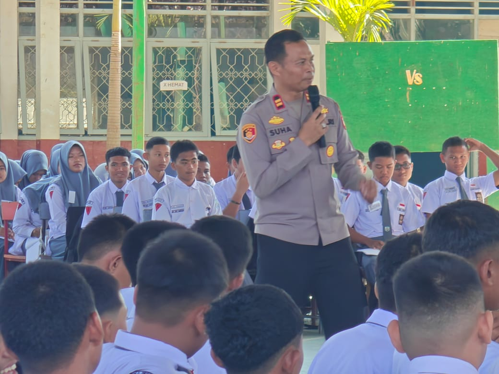
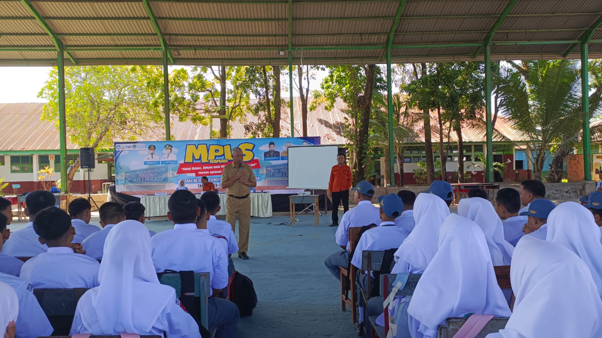

Pusat Keunggulan Pendidikan Modern
...
...
...
...
Terwujudnya murid yang Unggul dalam Teknologi, Berimtaq dan Berbudaya Lingkungan

Ahmad Fakih berhasil mengharumkan nama SMAN 1 Pangkajene dan Kepulauan dengan menjadi wakil pada ajang Olimpiade Olahraga Siswa Nasional (O2SN) tingkat nasional di cabang olahraga atletik nomor panca lomba..

Bapak Iptu Suharman Taher, S.Pd. Membawakan materi LDKS, Dorong siswa untuk menjadi pemimpin yang berahlak dan berkarakter .

Masa Pengenalan Lingkungan Sekolah berjalan sukses dengan penekanan pada edukasi karakter. Dalam kegiatan penutupan, pihak sekolah menyampaikan apresiasi kepada seluruh panitia, guru, tenaga kependidikan, pengurus OSIS, serta seluruh pihak yang telah berkontribusi menyukseskan pelaksanaan orientasi.

Pelatihan Implementasi Teknologi Content Delivery Network (CDN) Sebagai Akselerasi Digitalisasi Sekolah dari ITB .
Layanan pengaduan ini dikelola oleh TPPK (Tim Pencegahan dan Penanganan Kekerasan) dan Guru BK SMAN 1 Pangkajene dan Kepulauan. Setiap laporan yang Anda kirim akan otomatis tersusun dan diteruskan langsung melalui WhatsApp ke petugas terkait untuk segera ditindaklanjuti.